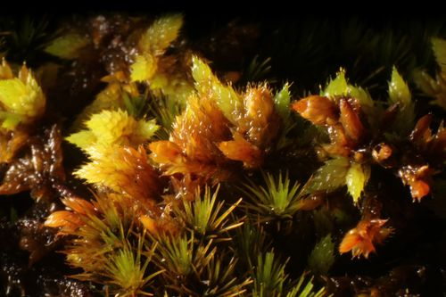

Rhacocarpaceae
(Rhacocarpus Moss Family - informal)
Rhacocarpaceae is a monotypic family comprising the genus Rhacocarpus, primarily found in the Southern Hemisphere. These are robust mosses forming dense mats or cushions on rock, often with a distinctive reddish-brown hue. Key features include broad, concave, ecostate leaves with porose cell walls, and immersed or emergent capsules that are often ribbed and lack a peristome.
Overview
The Rhacocarpaceae family, represented by the single genus Rhacocarpus, consists of robust mosses specialized for growing on rock surfaces (epilithic), particularly acidic rocks like sandstone, often in exposed or periodically wet conditions. They typically form extensive, dense mats or cushions that can be quite conspicuous due to their often distinctive coloration – ranging from dark green or blackish to striking reddish-brown or orange-brown hues.
These mosses are primarily distributed across temperate and tropical montane regions of the Southern Hemisphere, including South America, southern Africa, Australasia, and various oceanic islands, with some limited presence in the Northern Hemisphere. Morphologically, they are characterized by broad, concave leaves that lack a costa (midrib) and possess unique cell walls with prominent pores (pits). The sporophytes feature capsules that are typically immersed among the upper leaves or shortly emergent on brief setae, are often strongly ribbed or furrowed when dry, and lack peristome teeth (gymnostomous).
Rhacocarpaceae is closely related to Hedwigiaceae, sharing features like the ecostate leaves, rock habitat, and lack of a peristome. Both families are usually placed together in the order Hedwigiales, distinct from other major moss lineages like Orthotrichales or Grimmiales, although their exact phylogenetic position relative to other orders is still refined by ongoing research.
Quick Facts
- Scientific Name: Rhacocarpaceae
- Common Name: (Rhacocarpus Moss Family - informal)
- Number of Genera: 1 (Rhacocarpus)
- Number of Species: Approximately 5-7
- Distribution: Primarily Southern Hemisphere temperate and tropical montane regions; epilithic.
- Evolutionary Group: Bryophytes - Bryopsida (True Mosses) - Hedwigiales (usually).
Key Characteristics
Rhacocarpaceae mosses are defined by their robust habit, distinctive leaf structure, and reduced sporophytes.
Gametophyte Form and Habit
The gametophyte generation forms robust mats or cushions:
- Habit: Plants robust, forming dense, often extensive mats or cushions.
- Stems: Typically creeping primary stems with numerous erect or ascending, often densely foliate secondary stems/branches (cladocarpous, appearing somewhat pleurocarpoid but functionally acrocarpous).
- Size: Medium to large mosses, branches often several centimeters long.
- Color: Distinctive reddish-brown, orange-brown, yellowish-brown, or sometimes dark green to blackish.
- Substrate: Primarily epilithic (on rock, especially acidic types like sandstone), often in exposed sites or seepage areas.
Leaves (Phyllids)
Leaves are broad, concave, ecostate, with porose cells:
- Arrangement & Shape: Densely arranged, closely overlapping (imbricate), especially when dry, erect-spreading when moist. Shape typically broadly ovate, oblong, or somewhat rounded, strongly concave, often hooded or spoon-shaped at the apex (cucullate).
- Costa (Midrib): Characteristically absent or occasionally present as a very short, weak trace at the extreme base.
- Margins: Usually entire (smooth) and incurved due to leaf concavity.
- Cells: Laminal cells typically linear, rhomboidal, or fusiform (spindle-shaped), thick-walled, smooth (lacking papillae). Cell walls are characteristically strongly porose (with distinct pits or pores connecting adjacent cells). Alar cells (at basal corners) often differentiated, forming distinct groups of quadrate or colored cells.
Reproductive Structures
- Sexual Condition: Variable, autoicous or dioicous.
- Archegonia & Antheridia: Terminal on short lateral branches (cladocarpous). Perichaetial leaves often larger than vegetative leaves, convolute-sheathing, sometimes with hair-points.
Sporophyte
The sporophyte is typically immersed or emergent and lacks a peristome:
- Seta: Short (typically 1-4 mm), straight, keeping the capsule immersed among perichaetial leaves or shortly emergent just above them.
- Capsule: Erect and symmetric, typically ovate, oblong, or subglobose. Capsule wall often becomes strongly ribbed or furrowed longitudinally when dry.
- Operculum: Small, conical or shortly rostrate (beaked).
- Peristome: Characteristically absent (gymnostomous). The capsule mouth is bare after the operculum falls.
- Calyptra: Small, mitrate (conical) or cucullate (hood-shaped), smooth, covering only the operculum, fugacious (falling early).
Spores
Spores are often relatively large, spherical or irregular, and papillose.
Chemical Characteristics
The often reddish or brownish pigments are characteristic, likely related to sun exposure in their rock habitats, but specific compounds are not widely highlighted beyond typical moss chemistry.
Field Identification
Identifying Rhacocarpaceae involves recognizing the robust, often colored cushions on rock, combined with leaf and capsule features, particularly in the Southern Hemisphere.
Primary Identification Features (Hand Lens Level)
- Habitat & Habit: Robust, dense mats or cushions growing on rock (especially sandstone), often in exposed or seepage areas.
- Color: Frequently distinctive reddish-brown, orange-brown, or yellowish-brown hues (can also be dark green/black).
- Broad, Concave, Ecostate Leaves: Observe the closely overlapping (imbricate), broad, spoon-shaped leaves that lack a midrib (costa).
- Immersed/Emergent, Ribbed Capsules: Look for capsules nestled among the upper leaves or barely protruding on short setae. Capsules are often strongly ribbed/furrowed when dry and lack peristome teeth.
- Geographic Range: Primarily found in temperate and montane Southern Hemisphere regions.
Secondary Identification Features
- Porose Leaf Cells: Cell walls appear pitted under high magnification (microscope usually required).
- Hooded Leaf Apex: Leaf tips often curve inwards (cucullate).
- Smooth Leaf Cells: Cells lack papillae (appear smooth surfaced).
Seasonal Identification Tips
- Year-Round: Gametophytes are perennial and identifiable by habit, color, habitat, location, and leaf features.
- Variable: Sporophytes may mature seasonally, but the ribbed capsules often persist and remain visible for extended periods.
Common Confusion Points
Distinguishing Rhacocarpus from other robust rock mosses:
- Hedwigiaceae (Hedwigia, Hedwigidium): Very similar habitat, habit, ecostate leaves, and immersed/gymnostomous capsules. Distinguished by Hedwigia having strongly papillose leaf cells and often hyaline leaf tips. Hedwigidium has longitudinally pleated (plicate) leaves and non-porose cells. Neither has the distinctly porose cell walls of Rhacocarpus.
- Andreaeaceae (Andreaea): Also dark-colored rock mosses. Distinguished by their unique capsules that split open along vertical slits (valves) instead of having an operculum, and different leaf cell structure.
- Grimmiaceae: Common rock dwellers. Distinguished by usually having a distinct costa, often hyaline leaf tips, non-porose and often sinuose cell walls, and typically possessing a single peristome on capsules often borne on longer setae.
- Orthotrichaceae: Some rock species exist. Distinguished by having costate leaves, often papillose cells, capsules usually with double peristomes, and typically longer setae.
Field Guide Quick Reference
Look For:
- Habitat: Rock mats/cushions (esp. S. Hemisphere)
- Often reddish/orange/brownish color
- Robust plants, leaves imbricate when dry
- Leaves broad, concave, ecostate
- Capsules immersed/emergent, often ribbed
- Peristome absent (gymnostomous)
Key Distinctions:
- vs. Hedwigiaceae: Leaf cells (porose/smooth vs. papillose or non-porose), leaf plication (Hedwigidium).
- vs. Andreaeaceae: Capsule dehiscence (operculum vs. valves).
- vs. Grimmiaceae: Costa (absent vs. present), peristome (absent vs. single), leaf cells.
- vs. Orthotrichaceae: Costa, peristome (absent vs. double).
Notable Examples
The family Rhacocarpaceae contains the single genus Rhacocarpus.

Rhacocarpus purpurascens
(Purplish Rhacocarpus Moss)
A widespread species found across the Southern Hemisphere and occasionally extending north. Forms dense, robust, often reddish-brown or purplish-brown mats on acidic rock faces, especially where seepage occurs. Characterized by broad, concave, ecostate leaves with strongly porose cells, and immersed or emergent, ribbed, gymnostomous capsules.
Phylogeny and Classification
Rhacocarpaceae is classified within the class Bryopsida. It is consistently considered to be closely related to the family Hedwigiaceae, sharing key characteristics such as the epilithic habit, ecostate leaves, immersed/emergent capsules, and lack of a peristome.
Together, Rhacocarpaceae and Hedwigiaceae are usually placed in the order Hedwigiales. This order represents a distinct lineage within the Bryopsida, characterized by these shared features. While sometimes historically associated with orders like Orthotrichales or Grimmiales based on superficial similarities (e.g., rock habitat, acrocarpous-like function), molecular data strongly supports the Hedwigiales as a separate, coherent group. The key difference between Rhacocarpaceae (Rhacocarpus) and Hedwigiaceae (Hedwigia, Hedwigidium, Braunia) lies primarily in the leaf cell structure (Rhacocarpus having smooth, porose cells versus Hedwigiaceae having papillose or non-porose cells).
Position in Plant Phylogeny
- Kingdom: Plantae
- Clade: Embryophyta (Land Plants)
- Division: Bryophyta (Mosses)
- Class: Bryopsida
- Order: Hedwigiales
- Family: Rhacocarpaceae
Evolutionary Significance
Rhacocarpaceae is significant for understanding moss evolution:
- Adaptation to Epilithic Habitats: Represents a successful lineage specialized for growth on rock surfaces, often in exposed conditions.
- Leaf Cell Specialization: The strongly porose cell walls are a distinctive feature, potentially related to water transport or structural integrity.
- Convergent Evolution: The loss of the peristome (gymnostomy) has occurred independently in several moss lineages, including Hedwigiales.
- Biogeography: Its predominantly Southern Hemisphere distribution reflects Gondwanan origins and subsequent dispersal patterns for the Hedwigiales lineage.